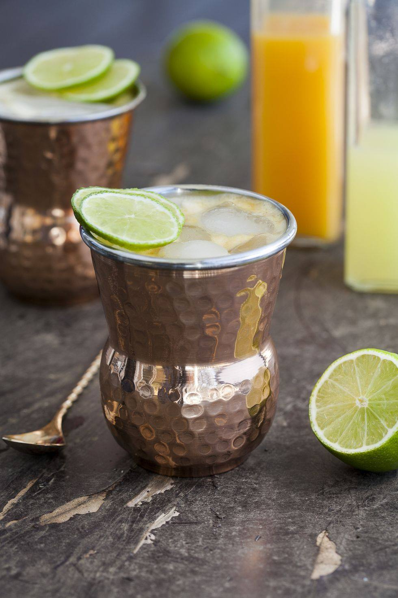

Mango Mule
4-5 slices of cucumber
1 oz honey syrup
1.5 oz mango puree
1.5 oz fresh lime juice
1.5 oz ginger beer
Ice
Instructions
Muddle cucumber and honey syrup in the bottom of a cocktail shaker. Add the mango puree and lime juice and shake with ice vigorously. Strain into a copper mug. Top with ginger beer and stir.
Virgin Cucumber Gimlet cocktail
Drink, Cocktail garnish, Alcoholic beverage, Distilled beverage, Gin and tonic, Mojito, Cocktail, Rickey, Non-alcoholic beverage, Vodka and tonic,
COURTESY
Ingredients
1.5 oz club soda
4-5 slices of muddled cucumber
1 oz fresh lime juice
1 oz simple syrup
Instructions
Combine all ingredients and shake with ice. Serve in a rocks glass over crushed ice. Garnish with a rolled cucumber slice.